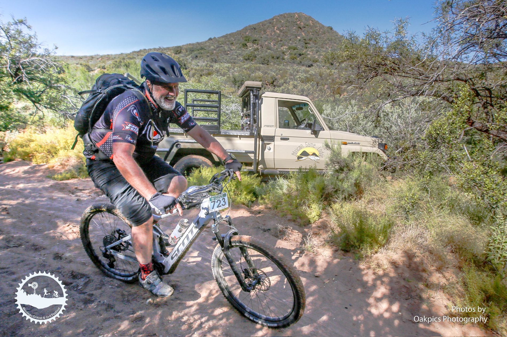
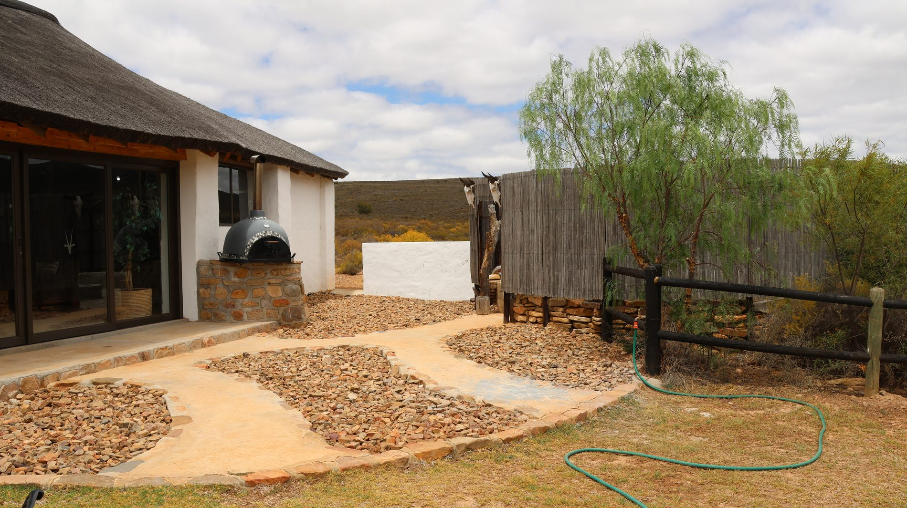
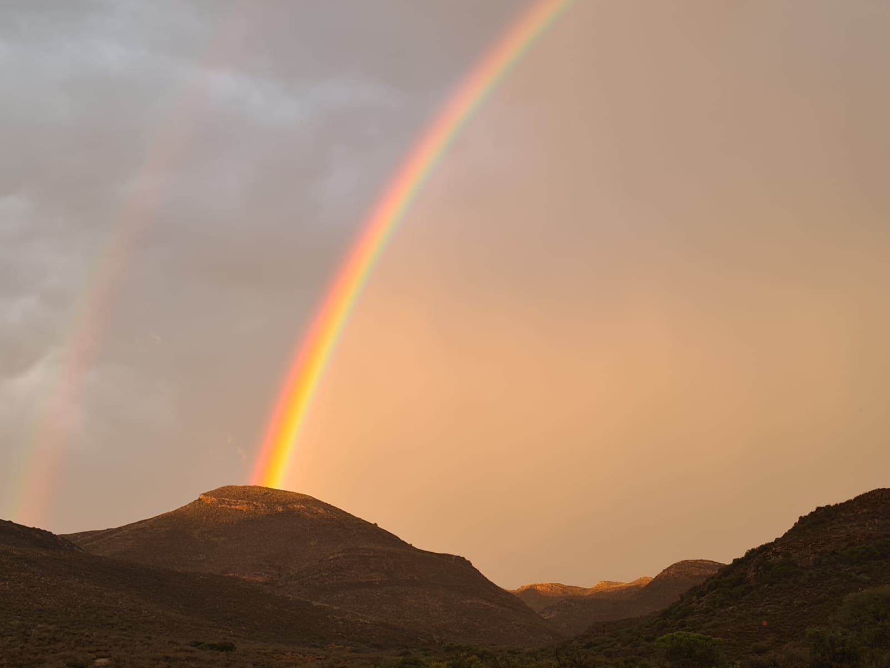

Little Karoo · Montagu · Private Reserve
Where the
Karoo
breathes
A private 4,500-hectare reserve cradled by the Langeberg Mountains — 2.5 hours from Cape Town, a world away from everything else.
Discover
A private 4,500-hectare reserve cradled by the Langeberg Mountains — 2.5 hours from Cape Town, a world away from everything else.

Discover the perfect blend of African wilderness and Little Karoo charm at our secluded, off-the-grid lodge. Just 2.5 hours from Cape Town, your journey north along Route 62 takes you through mountain landscapes, wine farms, farm stalls and orchards — culminating in the award-winning town of Montagu.
Completely off the grid and powered by solar energy, the lodge sits in harmony with one of the world's most biodiverse landscapes — the Cape Floral Kingdom.
Our Story“The land does not belong to us — we belong to the land. Here, we simply remember that.”
African Game Lodge · Little KarooMorning and sunset drives through the reserve in search of antelope, birds and Karoo wildlife.
Explore.JPG)
Traditional thatched chalets, private verandas, fireplaces and vast Little Karoo views.
Explore
A remote valley, mountain views and sunset light for weddings, functions and special gatherings.
Explore
Explore marked hiking trails and mountain bike routes through pristine wilderness.
ExploreFrom private luxury tents deep in the wilderness to spacious Karoo-style chalets for families — each option is designed to disappear into the landscape.
Traditional thatched chalets with fireplace, kitchen and expansive verandas.
Explore
Secluded luxury tents with private boma-braai, queen bed and en-suite bath.
Explore
An exclusive bush site for groups with open-air shower, boma and fireplace.
ExploreSituated in the Cape Floral Kingdom, our reserve is home to endemic species, ancient geology and landscapes that invite you to slow down and reconnect.
Explore BiodiversityTravel north along Route 62 through mountain passes, wine farms and orchards, then follow the 30-kilometre dirt road from Montagu into the wilderness.

Your African adventure is waiting.
Book Now · 023 614 3176 · info@africangamelodge.co.za